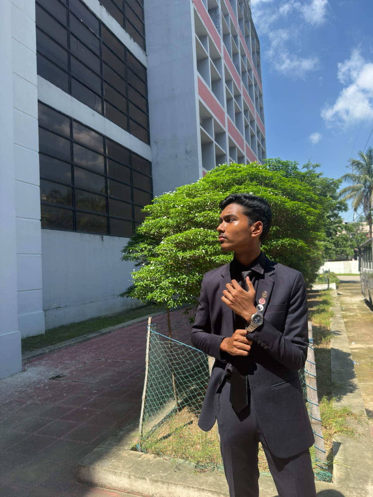
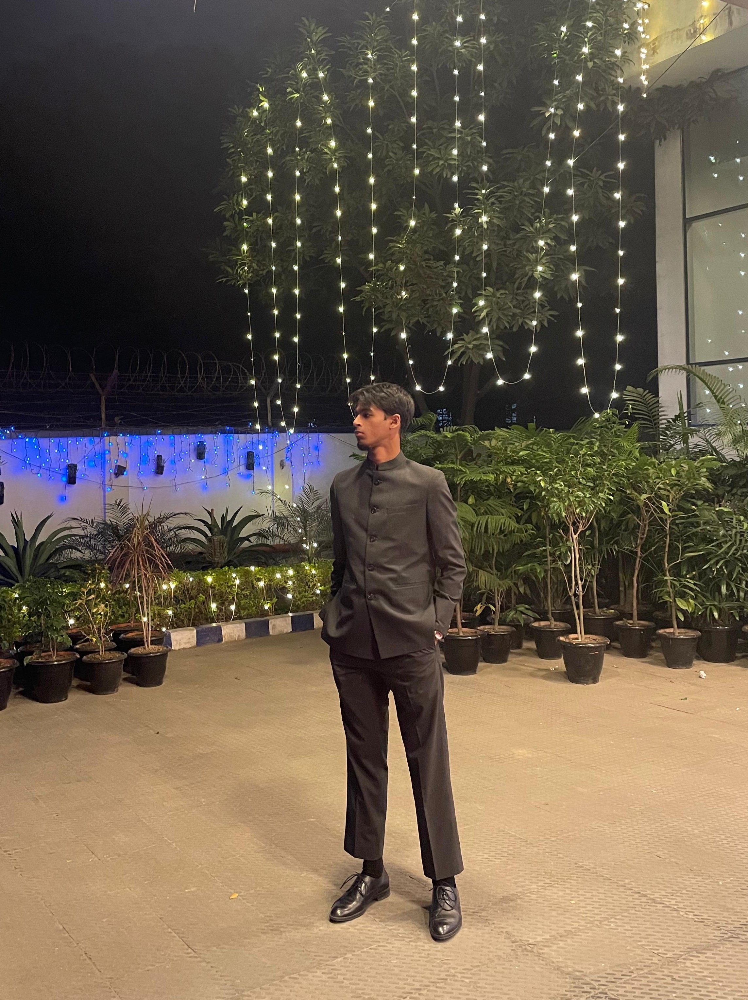
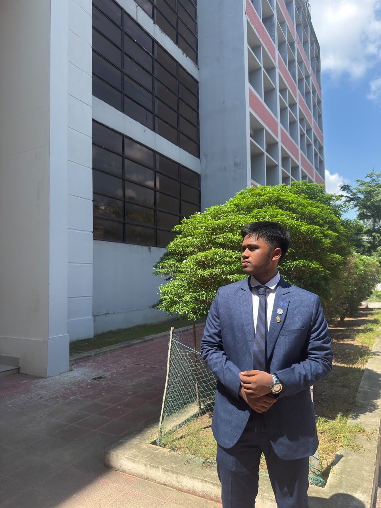

Main Governing Body
Session 2026
MD Abul Monsor
Club In-Charge
Aronya Rishop Dhar
Club Captain

Mohammed Abrar Shahriyar
Vice Captain

Ehan Rahman
Club Coordinator (College)

Ahmed Affan Islam
Club Coordinator (School)

Ariyan Morshed Chowdhury
Deputy Club Coordinator (School)